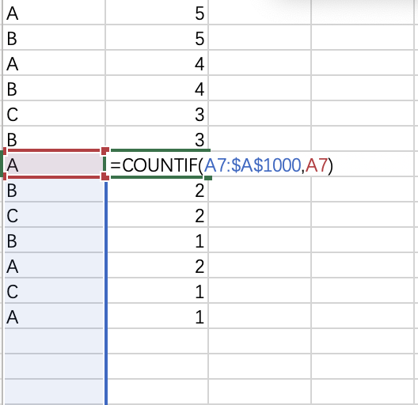

Excel删除重复项并保留第一项或最后一项
title: Excel删除重复项并保留第一项或最后一项
index_img: /postimg/Excel删除重复项并保留第一项或最后一项.jpg
banner_img: /postimg/Excel删除重复项并保留第一项或最后一项.jpg
date: 2021-09-10 15:33:34
categories: 计算机
tags: Excel
公式
保留最后一项
=COUNTIF(A1:$A$1000,A1)
复制到后一列-->下拉-->筛选-->选择不等于1的-->删除
保留第一项
=COUNTIF($A$1:A1000,A1000)
复制到后一列-->上拉-->筛选-->选择不等于1的-->删除
解释

有这张图之后该公式就很容易理解，COUNTIF(A1:$A$1000,A1)，其实就是计算A1单元格后有多少个与其相同的单元格(包括A1)，那么当其值大于1的时候就表示其后还有与其相同的单元格，反之其值等于1就表示其后面没有与其相同的单元格，其就是最后一个单元格，最后筛选一下，删除不等于1的行后，剩下的就都是最后一个重复项。